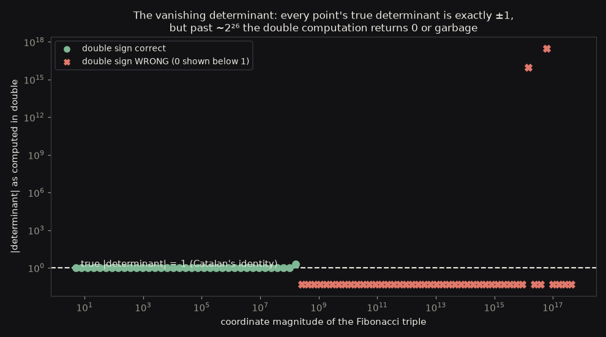
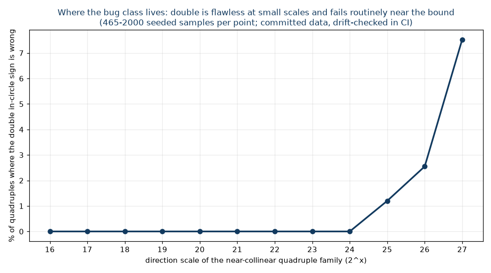
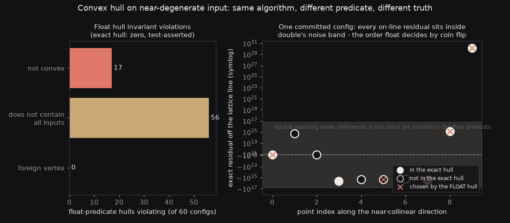

Floating point silently corrupts geometric algorithms at exact ties and near-degeneracies, and the failure is invisible until it isn't. This repository proves the danger with committed adversarial inputs, proves the fix with exact arithmetic and an unbounded oracle - and guards the word "exact" with code, not prose.
My D* Lite planner froze stale state into paths because two mathematically equal priority keys, computed along different arithmetic routes, landed one ulp apart in floating point - and a vertex the algorithm had to expand got buried behind one it didn't. The fix there was an exact integer cost metric. This repository generalizes that lesson into its own artifact: the classic geometric predicates - orientation, in-circle, segment intersection, and a convex hull built on them - implemented exactly over integer coordinates in __int128, with statically proven bounds.
The part most correctness repos skip: proving the danger is real. The committed corpus contains 657 adversarial inputs - Fibonacci triples whose true determinant is exactly ±1 at coordinate scale ~259 (Catalan's identity), near-collinear lattice quadruples whose in-circle determinant collapses into double's rounding noise, parallel segments separated by a determinant of exactly ±1 - and CI asserts, on every case, both that the naive double version gives the wrong answer and that the exact version gives the right one.
Exactness here has a domain: |coordinate| ≤ 260 for orientation, 228 for in-circle, proven by static bit-arithmetic. A documented bound that isn't checked would let an out-of-range input overflow silently and return a confidently wrong answer while the README still said "exact". So every predicate validates its inputs before any arithmetic happens - a plain magnitude comparison that can never rely on observing the overflow it prevents - and throws loudly on violation. The single most important test in the repository feeds coordinates one past each bound, in every argument position, and asserts the throw fires. For exact predicates over arbitrary doubles, the README names Shewchuk's adaptive predicates and CGAL: reimplementing those would risk looking right while being subtly wrong in the error-bound bookkeeping, the precise anti-pattern this project exists to refute.



Independent judgment, as always: a Python big-integer oracle with no coordinate bound re-verifies every committed case (1,554 of them, zero disagreements) and computes answers beyond the C++ bound where the guard refuses - proving the bound is a restriction of the implementation, not of the problem. CI also regenerates both the corpus and the figure data and diffs them against the committed files, so neither can drift from the code. And the honest cost: exactness runs about 2x slower than the float versions - __int128 is cheap - measured and machine-named, because the float versions buy their speed by being wrong.